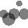
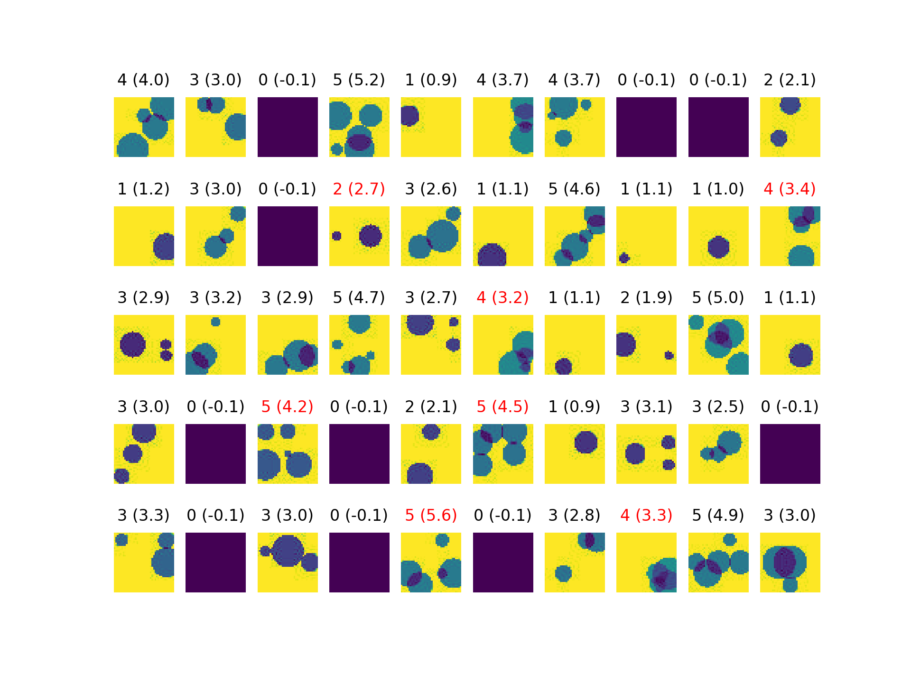

Keras
Keras is a modular and extensible API for building neural networks in Python. Keras is included with TensorFlow. Note that there are CPU and GPU versions of TensorFlow, here we'll use TensorFlow 1.10 for GPUs, which is available as an environment module.
Keras can be used to solve a wide set of problems using artificial neural networks, including pattern recognition. Ultimately, a neural network is just a black box that takes input values and computes output values. Internally, the output values are computed using artificial neurons, which are modelled after biological neurons. The connections between neurons have different "weights", which when submitted to different stimuli will output different signals. With sufficient training, we can teach a neural network to acquire the correct weights, i.e. adjust the weights until the desired output is produced.
Counting dots in images¶
In this example, we will set up a neural network to count the number of dots embedded in an image.
Generating the training and testing datasets¶
Start by generating images of dots. We'll generate 1000 images for our training set and 100 images to test our predictions. On Mahuika type the following commands to generate the training and testing data sets:
wget https://raw.githubusercontent.com/mkienzle/MachineLearning/master/Scripts/ProduceSyntheticData/DrawDots.R
ml R/3.6.1-gimkl-2018b
Rscript DrawDots.R -n 1000 -r 0 -R 5 -s 123 -o train -c train.csv -w 40
Rscript DrawDots.R -n 100 -r 0 -R 5 -s 234 -o test -c test.csv -w 40
The images are saved under directories train/ and test/, respectively. An example of image is test/img49.jpg.
display test/img49.jpg

which shows five, partially overlapping dots. Note that along with the images, a comma separated values (csv) file (e.g. train/train.csv) containing the number of dots (0 to 5) for each image is also saved.
Installing image processing software¶
The images need to be slightly manipulated. For instance we expect all the images to be black and white so we can collapse the red, green and blue channel into one. We'll need OpenCV to this task:
pip install opencv-python --user
Running the model¶
Our neural network
wget https://raw.githubusercontent.com/mkienzle/MachineLearning/master/Scripts/Conv2D/classify.py
is encoded in classify.py. It is made of three convolution layers, each followed by max pooling. The convolution and max pooling layers are often applied to extract features in images. Finally the image is flattened as a 1D array and a dense layer, which returns an estimate of the number of dots as a single floating point number, is added. The corresponding lines in classify.py look like (Python code):
clf = keras.Sequential()
clf.add( keras.layers.Conv2D(32, kernel_size=(3,3), strides=(1,1),
padding='same', data_format='channels_last', activation='relu') )
clf.add( keras.layers.MaxPooling2D(pool_size=(2, 2)) )
clf.add( keras.layers.Conv2D(128, kernel_size=(3,3), strides=(1,1),
padding='same', data_format='channels_last', activation='relu') )
clf.add( keras.layers.MaxPooling2D(pool_size=(2, 2)) )
clf.add( keras.layers.Conv2D(256, kernel_size=(3,3), strides=(1,1),
padding='same', data_format='channels_last', activation='relu') )
clf.add( keras.layers.MaxPooling2D(pool_size=(2, 2)) )
clf.add( keras.layers.Flatten() )
clf.add( keras.layers.Dense(1) )
We're now ready to train and test our model:
#!/bin/bash -e
#SBATCH --job-name keras-dots
#SBATCH --partition gpu
#SBATCH --gres gpu:1
#SBATCH --ntasks 1
#SBATCH --cpus-per-task 1
#SBATCH --time 00:10:00
#SBATCH --mem 512MB
module load TensorFlow/1.10.1-gimkl-2017a-Python-3.6.3
python classify.py --testDir=test --trainDir=train --save=someResults.png
Copy-paste the above and save in file classify.sl. Submit the Slurm script classify.sl
sbatch classify.sl
Looking at the output¶
Upon completion of the run, expect to find file someResults.png in the same directory as classify.py. This file contains the predictions for the first 50 test images, which will vary for each training but the result will look like:

(The purple images have no dots.) With each image the number of dots is displayed as well as the value inferred by the model in parentheses. The inferred values are to be rounded to the nearest integer. Plot titles in red indicate failures. Among the 100 test images, the correct number of dots was found in 90 percent of the cases (the accuracy will change with each training due to the randomness of the process). The predicted number of dots should be off by no more than one unit in most cases.